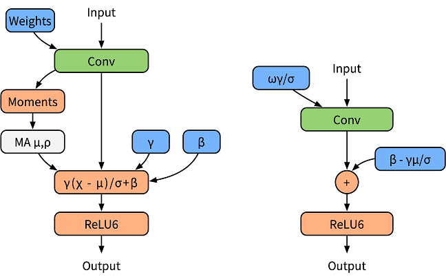

Applying the SimQAT Algorithm¶

Background¶
SimQAT is a basic quantization aware algorithm based on fake quantization nodes. Its principles come from Google’s Quantizing deep convolutional networks for efficient inference: A whitepaper.
Fake Quantization Node¶
A fake quantization node is a kind of node which is inserted into network during quantization aware training, and is used to search for network data distribution and feed back a loss in accuracy. The specific functions are as follows:
Find the distribution of network data, that is, find the maximum and minimum values of the parameters to be quantized.
Simulate the accuracy loss of low-bit quantization, apply the loss to the network model, and transfer the loss to the loss function, so that the optimizer optimizes the loss value during training.
BatchNorm Folding¶
To normalize the output data, the BatchNorm operator is added after the convolutional or fully connected layer. In the training phase, the BatchNorm operator is used as an independent operator to collect statistics on the output average value and variance (as shown in the left figure in the following figure). In the inference phase, the BatchNorm operator is integrated into the weight and bias. It is called BatchNorm folding (as shown in the right figure below).

The formula for folding BatchNorm is as follows:
In quantization aware training, to accurately simulate the folding operation in inference, the paper [1] uses two sets of convolutions to calculate the current BatchNorm parameter, and uses the calculated parameter to normalize the weight value of the actual convolution (as shown in the left figure below). CorrectionMul is used for weight calibration, and mulFold is used for weight data specification. The weight calibration and weight data specification are further integrated in the MindSpore Golden Stick (as shown in the right figure below) to improve training performance.

Quantization Aware Training¶
MindSpore’s quantization aware training uses fake quantization nodes to simulate quantization operations. During the training, floating-point numbers are still used for computation, and network parameters are updated through backward propagation learning, so that the network parameters can better adapt to the loss caused by quantization. MindSpore adopts the solution in reference [1] for the quantization of weights and data.
Table 1: Quantization aware training specifications
| Specifications | Description |
|---|---|
| Hardware | GPU |
| Networks | The supported networks include LeNet and ResNet-50. For details, see https://gitee.com/mindspore/models/tree/master. |
| Algorithms | Asymmetric, symmetric, layer-by-layer, and channel-by-channel quantization algorithms. |
| Solutions | 8-bit quantization solution |
| Data types | The GPU platform supports FP32. |
| Running modes | Graph mode and PyNative mode |
Quantization Aware Training Example¶
The procedure of quantization aware training is basically the same as that of common training. In the network construction phase, the quantization algorithm of the MindSpore Golden Stick is used to generate a quantization network. The complete process is as follows:
Load the dataset and process data.
Define a network.
Define the MindSpore Golden Stick quantization algorithm and use the algorithm to generate a quantization network.
Define the optimizer, loss function, and callbacks.
Train the network and save the checkpoint file.
Evaluate the network and compare the accuracy after quantization.
The following uses the LeNet5 as an example to describe these steps.
For the complete code, see the LeNet model repository.The train.py is the complete training code, and the eval.py is the accuracy verification code.
Loading a Dataset¶
Load MNIST dataset using MindData:
ds_train = create_dataset(os.path.join(config.data_path), config.batch_size)
In the code, create_dataset is referenced from dataset.py.
config.data_path and config.batch_size are configured in the configuration file.
Defining the Original Network¶
Instantiate a LeNet5 network:
from src.lenet import LeNet5
...
network = LeNet5(config.num_classes)
print(network)
The original network structure is as follows:
LeNet5<
(conv1): Conv2d<input_channels=1, output_channels=6, kernel_size=(5, 5), stride=(1, 1), pad_mode=valid, padding=0, dilation=(1, 1), group=1, has_bias=False, weight_init=normal, bias_init=zeros, format=NCHW>
(conv2): Conv2d<input_channels=6, output_channels=16, kernel_size=(5, 5), stride=(1, 1), pad_mode=valid, padding=0, dilation=(1, 1), group=1, has_bias=False, weight_init=normal, bias_init=zeros, format=NCHW>
(relu): ReLU<>
(max_pool2d): MaxPool2d<kernel_size=2, stride=2, pad_mode=VALID>
(flatten): Flatten<>
(fc1): Dense<input_channels=400, output_channels=120, has_bias=True>
(fc2): Dense<input_channels=120, output_channels=84, has_bias=True>
(fc3): Dense<input_channels=84, output_channels=10, has_bias=True>
>
For details about the ResNet-5 definition, see lenet.py.
Applying the Quantization Algorithm¶
After a network layer to be quantized is modified based on the original network definition, a network with fake quantization nodes is generated. This network is a quantization network. The SimulatedQuantizationAwareTraining class under the MindSpore Golden Stick is constructed and applied to the original network to convert the original network into a quantization network.
from mindspore_gs import SimulatedQuantizationAwareTraining as SimQAT
...
algo = SimQAT()
quanted_network = algo.apply(network)
print(quanted_network)
The quantized network structure is as follows. QuantizerWrapperCell is the encapsulation class of perceptual quantization training for the original Conv2d or Dense, including the original operator and pseudo-quantization nodes of input, output and weight. Users can refer to API to modify the algorithm configuration, and verify that the algorithm is configured successfully by checking the QuantizeWrapperCell properties.
LeNet5Opt<
(_handler):
...
(Conv2dQuant): QuantizeWrapperCell<
(_handler): Conv2dQuant<
in_channels=1, out_channels=6, kernel_size=(5, 5), stride=(1, 1), pad_mode=valid, padding=0, dilation=(1, 1), group=1, has_bias=False
(fake_quant_weight): SimulatedFakeQuantizerPerChannel<bit_num=8, symmetric=True, narrow_range=False, ema=False(0.999), per_channel=True(0, 6), quant_delay=0>
>
(_input_quantizer): SimulatedFakeQuantizerPerLayer<bit_num=8, symmetric=False, narrow_range=False, ema=False(0.999), per_channel=False, quant_delay=0>
(_output_quantizer): SimulatedFakeQuantizerPerLayer<bit_num=8, symmetric=False, narrow_range=False, ema=False(0.999), per_channel=False, quant_delay=0>
>
(Conv2dQuant_1): QuantizeWrapperCell<
(_handler): Conv2dQuant<
in_channels=6, out_channels=16, kernel_size=(5, 5), stride=(1, 1), pad_mode=valid, padding=0, dilation=(1, 1), group=1, has_bias=False
(fake_quant_weight): SimulatedFakeQuantizerPerChannel<bit_num=8, symmetric=True, narrow_range=False, ema=False(0.999), per_channel=True(0, 16), quant_delay=0>
>
(_input_quantizer): SimulatedFakeQuantizerPerLayer<bit_num=8, symmetric=False, narrow_range=False, ema=False(0.999), per_channel=False, quant_delay=0>
(_output_quantizer): SimulatedFakeQuantizerPerLayer<bit_num=8, symmetric=False, narrow_range=False, ema=False(0.999), per_channel=False, quant_delay=0>
>
(DenseQuant): QuantizeWrapperCell<
(_handler): DenseQuant<
in_channels=400, out_channels=120, weight=Parameter (name=DenseQuant._handler.weight, shape=(120, 400), dtype=Float32, requires_grad=True), has_bias=True, bias=Parameter (name=DenseQuant._handler.bias, shape=(120,), dtype=Float32, requires_grad=True)
(fake_quant_weight): SimulatedFakeQuantizerPerChannel<bit_num=8, symmetric=True, narrow_range=False, ema=False(0.999), per_channel=True(0, 120), quant_delay=0>
>
(_input_quantizer): SimulatedFakeQuantizerPerLayer<bit_num=8, symmetric=False, narrow_range=False, ema=False(0.999), per_channel=False, quant_delay=0>
(_output_quantizer): SimulatedFakeQuantizerPerLayer<bit_num=8, symmetric=False, narrow_range=False, ema=False(0.999), per_channel=False, quant_delay=0>
>
(DenseQuant_1): QuantizeWrapperCell<
(_handler): DenseQuant<
in_channels=120, out_channels=84, weight=Parameter (name=DenseQuant_1._handler.weight, shape=(84, 120), dtype=Float32, requires_grad=True), has_bias=True, bias=Parameter (name=DenseQuant_1._handler.bias, shape=(84,), dtype=Float32, requires_grad=True)
(fake_quant_weight): SimulatedFakeQuantizerPerChannel<bit_num=8, symmetric=True, narrow_range=False, ema=False(0.999), per_channel=True(0, 84), quant_delay=0>
>
(_input_quantizer): SimulatedFakeQuantizerPerLayer<bit_num=8, symmetric=False, narrow_range=False, ema=False(0.999), per_channel=False, quant_delay=0>
(_output_quantizer): SimulatedFakeQuantizerPerLayer<bit_num=8, symmetric=False, narrow_range=False, ema=False(0.999), per_channel=False, quant_delay=0>
>
(DenseQuant_2): QuantizeWrapperCell<
(_handler): DenseQuant<
in_channels=84, out_channels=10, weight=Parameter (name=DenseQuant_2._handler.weight, shape=(10, 84), dtype=Float32, requires_grad=True), has_bias=True, bias=Parameter (name=DenseQuant_2._handler.bias, shape=(10,), dtype=Float32, requires_grad=True)
(fake_quant_weight): SimulatedFakeQuantizerPerChannel<bit_num=8, symmetric=True, narrow_range=False, ema=False(0.999), per_channel=True(0, 10), quant_delay=0>
>
(_input_quantizer): SimulatedFakeQuantizerPerLayer<bit_num=8, symmetric=False, narrow_range=False, ema=False(0.999), per_channel=False, quant_delay=0>
(_output_quantizer): SimulatedFakeQuantizerPerLayer<bit_num=8, symmetric=False, narrow_range=False, ema=False(0.999), per_channel=False, quant_delay=0>
>
>
Defining the Optimizer, Loss Function, and Training Callbacks¶
Use Momentum as optimizer and SoftmaxCrossEntropyWithLogits as loss function for LeNet5 training.
net_loss = nn.SoftmaxCrossEntropyWithLogits(sparse=True, reduction="mean")
net_opt = nn.Momentum(network.trainable_params(), config.lr, config.momentum)
time_cb = TimeMonitor(data_size=ds_train.get_dataset_size())
config_ck = CheckpointConfig(save_checkpoint_steps=config.save_checkpoint_steps,
keep_checkpoint_max=config.keep_checkpoint_max)
ckpoint_cb = ModelCheckpoint(prefix="checkpoint_lenet", directory="./ckpt", config=config_ck)
Training the network and saving the checkpoint file¶
Call train method of class Model to start training:
model = Model(network, net_loss, net_opt, metrics={"Accuracy": Accuracy()})
model.train(config.epoch_size, ds_train, callbacks=[time_cb, ckpoint_cb, LossMonitor()])
The result is as follows:
epoch:1 step: 1875, loss is 0.1609785109
Train epoch time: 18172.836 ms, per step time: 9.692 ms
epoch:2 step: 1875, loss is 0.00334590533
Train epoch time: 8617.408 ms, per step time: 4.596 ms
epoch:3 step: 1875, loss is 0.00310735423
Train epoch time: 8526.766 ms, per step time: 4.548 ms
epoch:4 step: 1875, loss is 0.00962805934
Train epoch time: 8585.520 ms, per step time: 4.579 ms
epoch:5 step: 1875, loss is 0.00363082927
Train epoch time: 8512.096 ms, per step time: 4.540 ms
epoch:6 step: 1875, loss is 0.00169560452
Train epoch time: 8303.8515 ms, per step time: 4.429 ms
epoch:7 step: 1875, loss is 0.08799523115
Train epoch time: 8417.257 ms, per step time: 4.489 ms
epoch:8 step: 1875, loss is 0.0838107979
Train epoch time: 8416.146 ms, per step time: 4.489 ms
epoch:9 step: 1875, loss is 0.00722093607
Train epoch time: 8425.732 ms, per step time: 4.484 ms
epoch:10 step: 1875, loss is 0.00027961225
Train epoch time: 8544.641 ms, per step time: 4.552 ms
Evaluate network and comparing the accuracy¶
Obtain the accuracy of the common training network according to the steps in the LeNet model repository.
'Accuracy':0.9842
Load the checkpoint file obtained in the previous step and evaluate accuracy of the quantized network.
param_dict = load_checkpoint(config.checkpoint_file_path)
load_param_into_net(network, param_dict)
ds_eval = create_dataset(os.path.join(config.data_path), config.batch_size)
acc = model.eval(ds_eval)
print(acc)
'Accuracy':0.990484
The accuracy of LeNet5 does not decrease after quantization aware training.
One effect of quantization aware training algorithms is to compress the model size, but the model size mentioned here refers to the size of the deployed model. The network here is not the final deployment model, and since fake-quantization nodes are added to the network, the checkpoint file size of the quantized network is slightly increased compared to the original network’s checkpoint file.
Summary¶
indicates not test yet, NS indicates not supported yet.
Summary of Training¶
Training in graph mode based on MindSpore, MindSpore Golden Stick, MindSpore Models.
| algorithm | network | dataset | CUDA11 Top1Acc | CUDA11 Top5Acc | Ascend910 Top1Acc | Ascend910 Top5Acc |
|---|---|---|---|---|---|---|
| baseline | lenet | MNIST | 98.82% | - | - | - |
| SimQAT | lenet | MNIST | 98.94% | - | NS | - |
| baseline | resnet50 | CIFAR10 | 94.20% | 99.88% | - | - |
| SimQAT | resnet50 | CIFAR10 | 95.04% | 99.84% | NS | NS |
| baseline | resnet50 | Imagenet2012 | 77.16% | 93.47% | - | - |
| SimQAT | resnet50 | Imagenet2012 | 76.95% | 93.59% | NS | NS |
Summary of Deployment¶
Use the network trained on the CUDA11 for deployment test on different backends.
ARMCPU means the CPU of the Arm64 architecture. ARMCPU deployment test based on MindSpore Lite.
| algorithm | network | dataset | ARMCPU model size | ARMCPU Top1Acc | ARMCPU Performance | CUDA11 model size | CUDA11 Top1Acc | CUDA11 Performance | Ascend310 model size | Ascend310 Top1Acc | Ascend310 Performance |
|---|---|---|---|---|---|---|---|---|---|---|---|
| baseline | lenet | MNIST | 245kB | 98.83% | 87us | - | - | - | - | - | - |
| SimQAT | lenet | MNIST | 241kB | 98.95% | 89us | NS | NS | NS | NS | NS | NS |
| baseline | resnet50 | CIFAR10 | - | - | - | - | - | - | - | - | - |
| SimQAT | resnet50 | CIFAR10 | - | - | - | NS | NS | NS | NS | NS | NS |
| baseline | resnet50 | Imagenet2012 | - | - | - | - | - | - | - | - | - |
| SimQAT | resnet50 | Imagenet2012 | - | - | - | NS | NS | NS | NS | NS | NS |
The SimQAT quantization algorithm can reduce the model size, improve the model inference performance and reduce the inference power consumption without or less accuracy degradation.
References¶
[1] Jacob B, Kligys S, Chen B, et al. Quantization and training of neural networks for efficient integer-arithmetic-only inference[C]//Proceedings of the IEEE Conference on Computer Vision and Pattern Recognition. 2018: 2704-2713.